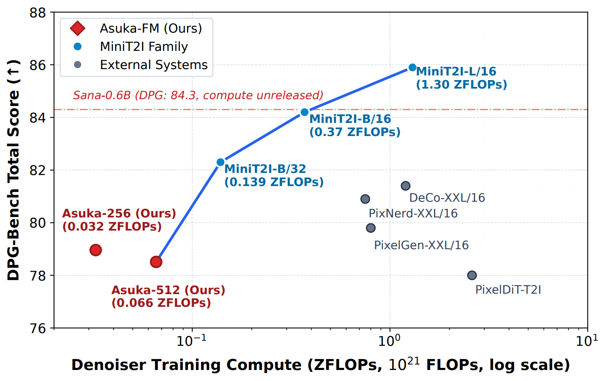
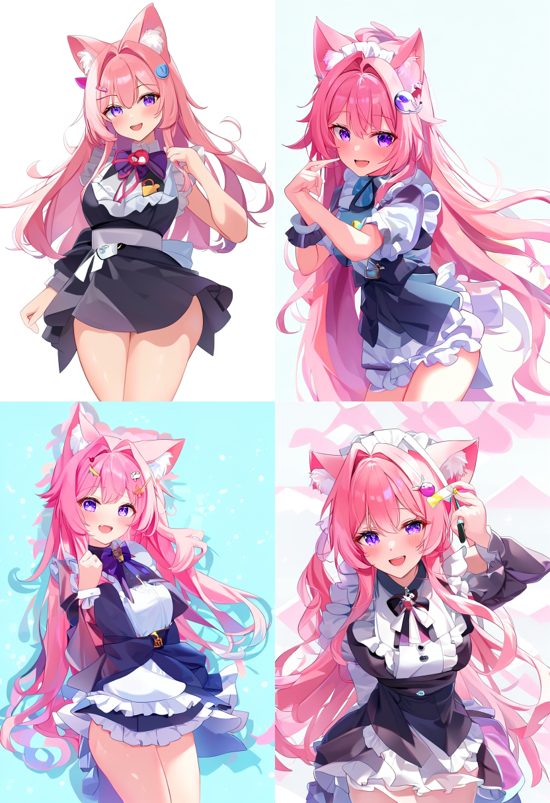
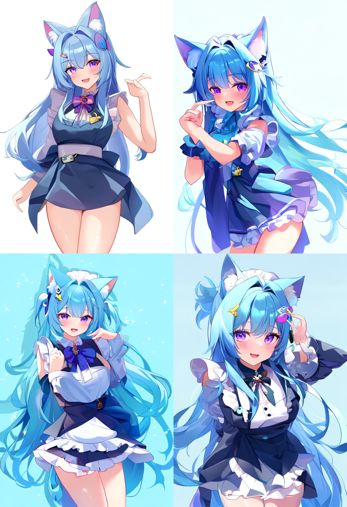

Overview: Pareto Frontier & Visual Synthesis
Frontier text-to-image foundation models require multi-billion parameter DiTs and industrial clusters. Asuka-FM co-designs model architecture, attention sparsity, and memory pipelines to push the extreme low-compute Pareto efficiency frontier on consumer workstations.

| Model | Params | Hardware Budget | GenEval ↑ | DPG ↑ |
|---|---|---|---|---|
| Industrial Foundation Models | ||||
| SD3 Medium | 2.0B | Massive Cluster | 0.620 | 84.08 |
| Accessible Academic Baselines | ||||
| MiniT2I-L/16 | 0.91B | 8× H100 (27 Days) | 0.883† | 84.80 |
| Asuka-FM (Consumer GPU, Open Data, No Prompt FT) | ||||
| Asuka-512 (Ours) | 0.21B | 1× RTX 4090 (81h) | 0.609 | 78.51 |
Zero-Shot Synthesis Showcase
Anime Domain: Zero-shot synthesis from our 206M dual-stream backbone pretrained on 337K Danbooru illustrations. Demonstrates sharp linework, anatomical consistency, and multi-concept binding without human aesthetic post-filtering.
1. Multi-Stage Research & Training Pipeline
Click any completed stage below to inspect exact epoch schedules, token drop ratios, throughput, and compute budgets measured on a single consumer NVIDIA RTX 4090 (24 GB, $0.33/hr):
Dual-Stream SPRINT Transformer Architecture (206.12M Pretraining Params)
1.1 SPRINT Compute & Memory Frontier Explorer
& RTX 4090 TelemetryAdjust target resolution, structured $2 \times 2$ drop ratio ($r$), and micro-batch size to inspect visual sequence length $N$, FLOP reduction against a homogeneous 13-layer DiT, and 1MP hardware limits:
1.2 SPRINT-Accelerated Latent-to-Pixel Adaptation (DiP)
Completed • 57.65h ($19.04)Transferring the converged 512px foundation model directly to raw RGB pixels using a 10.09M Patch Detailer Head (PDH) under native velocity regression ($v$-prediction), permanently bypassing VAE decoding during few-step inference ($N \le 8$) and RL rollouts:
2. Theoretical Foundations: Continuous RoPE & Amortization Asymmetry
Two core analytical results govern Asuka-FM's spatial generalization and latent-to-pixel deployment regimes.
2.1 Continuous RoPE Phase Collapse & Calibration
Mapping a latent patch grid ($N_H \times N_W$) to area-preserving continuous
coordinates $(y_{\text{pos}}, x_{\text{pos}}) \in [-r_H, r_H] \times [-r_W, r_W]$
with $r_H = \sqrt{N_H/N_W}$ and $r_W = \sqrt{N_W/N_H}$ enables arbitrary aspect
ratios without dynamic padding or torch.compile graph breaks.
However, naive continuous coordinates break standard RoPE frequencies:
Why Uncalibrated Continuous RoPE Collapses
Under standard geometric frequencies ($\omega_k = 10000^{-k/d_s} \le 1.0$), normalizing coordinates shrinks adjacent phase shifts below $7.2^\circ$. As $N_H$ grows, the cosine kernel $K(\mathbf{p}_i, \mathbf{p}_{i+1}) \to 1.0$, erasing local spatial discrimination and causing duplicated heads/torsos.
Parameter-Free Full-Spectrum Calibration
Bounding $f_{\max} = 2\pi$ enforces $45^\circ$ adjacent dispersion at $256^2$ without Nyquist aliasing, while $f_{\min} = \pi/4$ prevents half-cycle periodic resonance across $\Delta p_{\max} = 2.0$. Registered as a static buffer (zero learnable parameters or optimizer overhead).
Show Taylor Expansion Proof of Phase Collapse
2.2 Latent vs. Pixel Sampling: The Amortization Asymmetry
Removing the VAE decoder does not universally speed up inference. While latent diffusion pays a one-time $O(1)$ terminal VAE decode penalty ($t_{\text{fixed, VAE}}$), pixel diffusion must evaluate the 10.09M convolutional PDH head recurrently at every ODE step (adding $\Delta t_{\text{head}}$ per step, twice per step under CFG):
Key Takeaway: Pixel diffusion ($P=16$) is decisively faster in few-step / distilled regimes ($3.34\times$ at $N=1$, $1.44\times$ at $N=4$ at 1MP), whereas latent sampling wins for multi-step ODE trajectories ($N \ge 13$ at 1MP, $N \ge 6$ at $512^2$, where pixel is $9\%$–$31\%$ slower)—unless patch size is widened to $P=32$ ($1.78\times$ sampling speedup at $512^2$).
3. Empirical Validation & Benchmark Analysis
Quantitative evaluations, consumer vs datacenter hardware profiling,
pretraining timings, and latent-to-pixel transfer benchmarks across
asuka-fm (625K open corpus & 337K Danbooru) and
toy-diffusion:
Open-Domain Compositional Benchmarks & Compute Cost
Evaluated strictly as an open-domain foundation model (100-step Euler ODE,
$w_{\text{cfg}} = 8.0$ at $256^2$ and $6.0$ at $512^2$) with
no benchmark-specific fine-tuning. Models marked †
were fine-tuned on BLIP3o-60K, which directly aligns prompts to GenEval syntax.
| Model | Params | Hardware Budget (Est. Cost) | Training Data | GenEval ↑ | DPG ↑ |
|---|---|---|---|---|---|
| Industrial Foundation Models (Multi-Billion Parameters, Datacenter Compute) | |||||
| SDXL Base | 2.6B | Hundreds of A100s | Millions (Web) | 0.406* | 72.40* |
| SD3 Medium | 2.0B | Massive Cluster (>$70k) | Millions (Web) | 0.620* | 84.08* |
| FLUX.1 [Dev] | 12.0B | Massive Cluster (>$175k) | Web-Scale | 0.660* | 83.84* |
| Janus-Pro-7B | 7.0B | Large Cluster | Multimodal Web | 0.800* | 84.19* |
| i1 (Open Foundation) | 3.0B | TPU v5p-128 (90.6k h, ≈$380k) | Curated Open | 0.840 | 86.73 |
| Accessible Academic Baselines (Sub-2B Parameters, Finetuned on BLIP3o-60K†) | |||||
| PixNerd-XXL | 1.2B | Multi-GPU Cluster | Pretrain + BLIP3o† | 0.730* | 80.90* |
| PixelGen-XXL | 1.1B | 8× H800 (1,152 h, ≈$2,880) | 36M + BLIP3o† | 0.790* | 79.36 |
| DeCo-XXL | 1.1B | Multi-GPU Cluster | Pretrain + BLIP3o† | 0.860* | 81.40* |
| Looped-DiT B/16 | 0.26B | 8× H100 (576 h, ≈$2,016) | CC12M + BLIP3o† | 0.874* | 87.00* |
| MiniT2I-L/16 | 0.91B | 8× H100 (27 Days) | CC12M + BLIP3o† | 0.883* | 84.80* |
| Asuka-FM (Ours: 1× Consumer RTX 4090, 625K Open Curated Corpus, No BLIP3o Finetuning) | |||||
| Asuka-256 (Dense Final) | 0.21B | 1× RTX 4090 (68.0h, $22.44) | 625K Open | 0.588 | 78.96 |
| Asuka-512 (75% Sparse, Ph. 2A) | 0.21B | 1× RTX 4090 (40.0h, $13.20) | 625K Open | 0.480 | 68.40 |
| Asuka-512 (Dense FT 20k Steps) | 0.21B | 1× RTX 4090 (60.0h) | 625K Open | 0.575 | 79.49 |
| Asuka-512 (Dense Final, Ep 139) | 0.21B | 1× RTX 4090 (81.0h, $26.73) | 625K Open | 0.609 | 78.51 |
*Prior literature numbers. Total latent pretraining compute is 149.0h ($49.17) DiT-only (0.0657 ZFLOPs), or 161.2h ($53.20) including one-time offline VAE encoding.
4. Continuous Aspect RoPE & Virtual Camera Simulators
Interactive verification of Asuka-FM's parameter-free coordinate manifold:
(4.1) zero-shot inference camera steering, (4.2) static square crop training to
prevent torch.compile JIT graph breaks, and (4.3) full-spectrum
frequency calibration to cure phase collapse.
4.1 Zero-Shot Virtual Camera Viewport Simulator (Inference)
Apply affine coordinate transformations directly to the continuous RoPE evaluation mesh at inference time without retraining or auxiliary camera tokens. Compare the transformed viewport (blue) against the canonical base frame (red dashed):
4.2 Shifted Square Crop & Static Tensor Visualizer
Replicates Asuka-FM's shifted crop pipeline (following Patch Diffusion [12] &
HDM [11]): isotropically scale the shorter edge, extract a fixed static crop window
(strictly $256^2$ or $512^2$ during pretraining to prevent
torch.compile JIT recompilations), and slice the continuous
aspect-normalized RoPE map:
256 × 384
256 × 256
4.3 RoPE Phase Shift & Attention Kernel Inspector
Click any probe patch $(\star)$ on the $16 \times 16$ grid ($256^2$ canvas) to evaluate the normalized 2D axial rotary kernel $K(\mathbf{p}_i, \mathbf{p}_j) = \sum_{k=0}^{d_s-1} \frac{\cos((y_i - y_j)\omega_k) + \cos((x_i - x_j)\omega_k)}{2 d_s}$ (8 channels plotted per axis). Switch modes to diagnose phase collapse:
register_buffer). Adjacent patches separate by 45.0°, restoring
sharp isotropic radial decay without optimizer overhead.
5. Empirical Discoveries & Hypothesis Defense
Empirical validation across open-domain and anime corpora covering zero-shot virtual camera dynamics, latent-to-pixel $v$-prediction vs. $x_0$-prediction, patch widening ($P=16 \to 32$), semantic attribute disentanglement, and ablation curtains:
5.1 Virtual Camera Flight, Manifold Support & Failure Modes
Continuous aspect-normalized RoPE enables smooth virtual camera panning and optical zoom under identical noise seeds. Switch between open-domain results, anime results, and zoom failure diagnostics:
Horizontal Panning: Shifting x_shift = +0.25
pans the viewport rightward, framing the dachshund toward the left canvas edge without
altering knit cap details or snow texture.
At canonical unit scale ($z = 1.0\times$), the 206M backbone synthesizes coherent cobblestones, rigid wooden bench slats, and clean floral separation.
On complex organic compositions, magnifying via coordinate grid compression ($z > 1.0\times$) can induce: (i) painterly texture smearing on cobblestones, (ii) pink pigment bleeding, and (iii) bench-slat warping via rotary phase dampening ($\Delta\theta_k \propto 1/z$).
5.2 Latent-to-Pixel Adaptation: $v$-Pred vs. $x_0$-Pred & Patch Compression
Adapting the converged Asuka-512 latent backbone directly to RGB
pixels via the 10.09M Patch Detailer Head (PDH) (57.65h on RTX 4090,
$19.04) eliminates the online VAE bottleneck (59.4%–72.6%
training wall; up to 3.34× faster 1-step inference). Below are
the $512^2$ prediction objective, large-patch scaling ($P=16 \to 32$), and
$256^2$ diagnostic ablations:
Converting $\hat{x}_0$ into velocity targets $v_t = (x_t - \hat{x}_0)/t$
triggers $t \to 0$ singularities in bfloat16, forcing dynamic
percentile clipping that flattens dynamic range and desaturates colors
(Stage 2B Synth: 0.477 GenEval / 0.628 Colors).
Direct velocity regression maintains smooth probability paths with zero activation clipping, recovering >95% of the latent anchor (0.609 GenEval / 78.51 DPG) while boosting Two-Object (0.780 vs. 0.699) and Color Attribution (+0.072; Stage 2B Synth: 0.505 GenEval / 0.726 Colors).
5.3 Semantic Disentanglement & Compound Artist Style Steering
Verifying that our AdaLN-free Dual-Stream DiT decouples chromatic attributes from geometry and responds smoothly to compound artist tokens without explicit aesthetic SFT:

Prompt: pink_hair, cat_ears, maid_outfit
Prompt: blue_hair, cat_ears, maid_outfit
Under identical latent noise initializations $x_1 \sim \mathcal{N}(0, \mathbf{I})$,
toggling only pink_hair → blue_hair alters hair pigment
while leaving facial morphology, finger poses, ribbon folds, and sparkle lighting
invariant down to the pixel level.

5.4 Interactive Resolution, RoPE & SPRINT Ablation Curtain
Drag the slider across identical random seeds to inspect resolution scaling (256px → 512px), mid-flight RoPE calibration, and SPRINT sparse-to-dense recovery at 512px and 1MP:
Canvas Scaling (256² → 512²): Adapting to 512×512 resolves intricate floral kimono patterns, umbrella ribs, and crisp iris highlights while preserving global pose and color harmony.
Citation
If you find Asuka-FM or our systems profiling useful for your research, please cite (arXiv identifier will be updated upon public posting):
@article{rodrigo2026asukafm,
title = {Asuka-FM: A System-Architectural Co-Design Framework for Efficient Text-to-Image Pretraining on Consumer Hardware},
author = {Rodrigo Gonz{\'a}lez, V{\'i}ctor and Olmos, Pablo M. and Peis, Ignacio and Lancho, Alejandro},
journal = {arXiv preprint arXiv:XXXX.XXXXX},
year = {2026},
note = {Forthcoming}
}